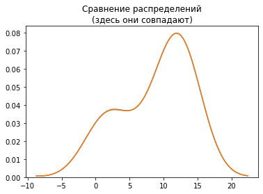

Сборник полезных рецептов¶
Эта тетрадка - набор “рецептов” в виде кода, который свободно можно использовать в своих проектах. Необязательно делать так же - но в случае затруднений сюда можно подглядывать. Кроме того, эта тетрадка организована блоками по порядку исследований, не каждый блок кода будет нужен в каждом исследовании, но какие-то могут быть полезны.
%matplotlib inline
import warnings
warnings.filterwarnings('ignore')
import numpy as np
import pandas as pd
import matplotlib.pyplot as plt
import seaborn as sns
1. Загрузка данных¶
dataframe = pd.read_csv(
'data/synthetic_data.csv',
sep=';', # разделитель колонок
decimal=',', # разделитель дробей у чисел
parse_dates=['date'], # у какой колонки разбирать даты
dayfirst=True, # первым в дате идёт номер дня
header=0 # первая строка - заголовки
)
dataframe.head()
| date | number | value | target | group | |
|---|---|---|---|---|---|
| 0 | 2020-01-01 | 1 | 3.108266 | 12.747804 | 1 |
| 1 | 2020-01-02 | 2 | 3.074249 | 12.504289 | 1 |
| 2 | 2020-01-03 | 3 | 2.383530 | 8.029174 | 1 |
| 3 | 2020-01-04 | 4 | -1.415908 | 0.638435 | 0 |
| 4 | 2020-01-05 | 5 | -2.715844 | 4.631055 | 0 |
dataframe.dtypes
date datetime64[ns]
number int64
value float64
target float64
group int64
dtype: object
Аналогично можно поступить и с Excel-файлами (при наличии некоторых предустановленных библиотек по типу xlrd - если их нет, будет ошибка).
dataframe = pd.read_excel('data/synthetic_data.xlsx', sheet_name='data')
dataframe.head()
| date | number | value | target | group | |
|---|---|---|---|---|---|
| 0 | 2020-01-01 | 1 | 3.108266 | 12.794800 | 1 |
| 1 | 2020-01-02 | 2 | 3.074249 | 12.475463 | 1 |
| 2 | 2020-01-03 | 3 | 2.383530 | 8.073523 | 1 |
| 3 | 2020-01-04 | 4 | -1.415908 | 0.627951 | 0 |
| 4 | 2020-01-05 | 5 | -2.715844 | 4.657414 | 0 |
dataframe.info()
<class 'pandas.core.frame.DataFrame'>
RangeIndex: 60 entries, 0 to 59
Data columns (total 5 columns):
date 60 non-null datetime64[ns]
number 60 non-null int64
value 60 non-null float64
target 60 non-null float64
group 60 non-null int64
dtypes: datetime64[ns](1), float64(2), int64(2)
memory usage: 2.5 KB
Чтение текстового файла чуть-чуть посложнее.
with open('data/synthetic_data.csv', 'r', encoding='utf-8') as fd:
content = fd.read()
content.split()[:4]
['date;number;value;target;group',
'01.01.2020;1;3,108266118;12,74780383;1',
'02.01.2020;2;3,07424866;12,50428892;1',
'03.01.2020;3;2,383530311;8,029174103;1']
2. Разведочный анализ¶
# описательные статистики
dataframe.describe(include='all')
| date | number | value | target | group | |
|---|---|---|---|---|---|
| count | 60 | 60.000000 | 60.000000 | 60.000000 | 60.000000 |
| unique | 60 | NaN | NaN | NaN | NaN |
| top | 2020-01-23 00:00:00 | NaN | NaN | NaN | NaN |
| freq | 1 | NaN | NaN | NaN | NaN |
| first | 2020-01-01 00:00:00 | NaN | NaN | NaN | NaN |
| last | 2020-02-29 00:00:00 | NaN | NaN | NaN | NaN |
| mean | NaN | 30.500000 | 1.083285 | 7.137988 | 0.766667 |
| std | NaN | 17.464249 | 2.228289 | 4.982911 | 0.426522 |
| min | NaN | 1.000000 | -2.999931 | -0.256627 | 0.000000 |
| 25% | NaN | 15.750000 | -0.787103 | 1.982625 | 1.000000 |
| 50% | NaN | 30.500000 | 2.196329 | 7.037532 | 1.000000 |
| 75% | NaN | 45.250000 | 3.028939 | 12.214287 | 1.000000 |
| max | NaN | 60.000000 | 3.124952 | 12.927017 | 1.000000 |
# если колонок много, эту таблицу удобно транспонировать
# без include='all' будут показаны только числовые колонки
dataframe.describe().T
| count | mean | std | min | 25% | 50% | 75% | max | |
|---|---|---|---|---|---|---|---|---|
| number | 60.0 | 30.500000 | 17.464249 | 1.000000 | 15.750000 | 30.500000 | 45.250000 | 60.000000 |
| value | 60.0 | 1.083285 | 2.228289 | -2.999931 | -0.787103 | 2.196329 | 3.028939 | 3.124952 |
| target | 60.0 | 7.137988 | 4.982911 | -0.256627 | 1.982625 | 7.037532 | 12.214287 | 12.927017 |
| group | 60.0 | 0.766667 | 0.426522 | 0.000000 | 1.000000 | 1.000000 | 1.000000 | 1.000000 |
# выбор уникальных значений
pd.unique(dataframe.group)
array([1, 0], dtype=int64)
# подсчет количества уникальных
pd.value_counts(dataframe.group)
1 46
0 14
Name: group, dtype: int64
Основное что не следует забывать в разведочном анализе - это отсмотреть распределение как минимум целевой величины.
sns.distplot(
dataframe.value,
label='VALUE'
)
sns.distplot(
dataframe.target,
hist=True, # отображать столбчатую диаграмму
kde=True, # отображать оценку плотности линией
label='TARGET',
color='red'
)
# точка с запятой в конце вывода графики нужна, чтобы
# не отображать объект диаграммы в выводе ячейки
plt.legend(loc='best');
plt.title('Точечная диаграмма')
sns.scatterplot(x="value", y="target", hue="group", data=dataframe);
plt.title('Диаграмма по времени')
sns.lineplot(x="date", y="value", data=dataframe, label="value")
sns.lineplot(x="date", y="target", data=dataframe, label="target")
# метод форматирования отображения дат для get current figure (gcf)
plt.gcf().autofmt_xdate();
# ну и конечно же попарные диаграммы
sns.pairplot(
hue='group',
data=dataframe,
# выбрать только конкретные колонки
vars=['value', 'target']
);
3. Подготовка данных¶
# заполнение пропусков в колонке средним значением
dataframe['group'] = dataframe['group'].fillna('mean')
# заполнение пропусков в колонке нулем
dataframe['group'] = dataframe['group'].fillna(0)
# удаление всех строк с пропущенными значениями
dataframe = dataframe.dropna()
# удаление всех колонок с пропущенными значениями
dataframe = dataframe.dropna(axis='columns')
# случайная выборка из набора данных
dataframe.sample(2)
| date | number | value | target | group | |
|---|---|---|---|---|---|
| 57 | 2020-02-27 | 58 | 3.007026 | 12.035002 | 1 |
| 15 | 2020-01-16 | 16 | 0.970513 | 1.954757 | 1 |
# добавление новой колонки как функции двух других
dataframe['function'] = dataframe['target'] * dataframe['group']
dataframe['function'].describe()
count 60.000000
mean 6.315458
std 5.672449
min -0.256627
25% 0.000000
50% 7.037532
75% 12.214287
max 12.927017
Name: function, dtype: float64
# удаление колонки
dataframe = dataframe.drop('function', axis='columns')
dataframe.columns
Index(['date', 'number', 'value', 'target', 'group'], dtype='object')
Перейдем к numpy-массивам.
X = dataframe[['number', 'value']].values
y = dataframe['target'].values
z = dataframe['group'].values
print('X shape', X.shape)
print('y shape', y.shape)
print('z shape', z.shape)
X shape (60, 2)
y shape (60,)
z shape (60,)
from sklearn.model_selection import train_test_split
X_train, X_test, y_train, y_test, z_train, z_test, indices_train, indices_test = train_test_split(
X, y, z, dataframe.index, # z, index, и даже y - необязательно, то есть можно X_train, X_test = train_test_split(X, random_state=...)
random_state=1, # зафиксируем генератор случайных чисел для воспроизводимости
test_size=0.2, # 20% тестовое множество
stratify=z # сохранять пропорции классов в разбиениях
# также по умолчанию этот метод перемешивает данные
)
print('X train shape:', X_train.shape, 'X test shape:', X_test.shape)
print('y train shape:', y_train.shape, 'y test shape:', y_test.shape)
print('z train shape:', z_train.shape, 'z test shape:', z_test.shape)
X train shape: (48, 2) X test shape: (12, 2)
y train shape: (48,) y test shape: (12,)
z train shape: (48,) z test shape: (12,)
# кодировщик, который кодирует категориальные переменные векторами из 1 и 0
from sklearn.preprocessing import OneHotEncoder
# поскольку категории заранее известны, подгонять можно на всём множестве
encoder = OneHotEncoder(
sparse=False # скажем не использовать разреженные матрицы
).fit(z.reshape(-1, 1))
encoder.transform(z.reshape(-1, 1))[0:2]
array([[0., 1.],
[0., 1.]])
# кодировщик, который для числовых переменных вычитает среднее и делит на разброс
from sklearn.preprocessing import StandardScaler
# числовые кодировщики следует настраивать на тренировочном множестве
scaler = StandardScaler().fit(X_train)
scaler.transform(X_test)[0:2]
array([[ 0.45012556, 0.7951007 ],
[-0.3916677 , -1.34121405]])
# так можно делать "пайплайны" - цепочки преобразований
from sklearn.pipeline import make_pipeline
from sklearn.decomposition import PCA
pipeline = make_pipeline(
StandardScaler(),
PCA(n_components=2, random_state=1)
)
pipeline.fit(X_train)
pipeline.transform(X_test[0:2])
array([[-0.88050793, -0.24393426],
[ 1.22533244, 0.67143067]])
# при желании, можно добавить колонку
# и подогнать и преобразовать сразу
transformed = pipeline.fit_transform(np.column_stack([
X_train, encoder.transform(z_train.reshape(-1, 1))
]))
transformed[0:2]
array([[-0.75066542, -1.0823111 ],
[-0.23549609, -0.41111515]])
# есть и другие интересные препроцессоры
from sklearn.preprocessing import PolynomialFeatures
pipeline = make_pipeline(
PolynomialFeatures(degree=2, include_bias=True, interaction_only=False),
StandardScaler()
)
pipeline.fit(X_train)
Pipeline(steps=[('polynomialfeatures', PolynomialFeatures()),
('standardscaler', StandardScaler())])
4. Построение моделей¶
from sklearn.linear_model import LinearRegression
from sklearn.linear_model import LogisticRegression
from sklearn.cluster import KMeans
from sklearn.metrics import r2_score, mean_absolute_error, confusion_matrix, silhouette_score
Для scikit-learn всё достаточно просто. fit-predict-score :)
linear = LinearRegression().fit(
pipeline.transform(X_train), y_train
)
"R2 test score %.3f" % linear.score(pipeline.transform(X_test), y_test)
'R2 test score 1.000'
"MAE test %.3f" % mean_absolute_error(y_test, linear.predict(pipeline.transform(X_test)))
'MAE test 0.027'
logistic = LogisticRegression(random_state=1).fit(
X_train, z_train
)
"Test set accuracy %.3f" % logistic.score(X_test, z_test)
'Test set accuracy 1.000'
confusion_matrix(logistic.predict(X_test), z_test)
array([[3, 0],
[0, 9]], dtype=int64)
clusterer = KMeans(n_clusters=2).fit(pipeline.transform(X))
"silhouette score %.3f" % silhouette_score(
pipeline.transform(X),
clusterer.labels_
)
'silhouette score 0.364'
5. Визуализация прогнозов¶
plt.title('Сравнение распределений\n(здесь они совпадают)')
sns.distplot(y_test, hist=False)
sns.distplot(linear.predict(pipeline.transform(X_test)), hist=False);

# у пайплайна возможно перечислить все его компоненты
featurer = pipeline.steps[0][1]
plt.figure(figsize=(10, 4))
plt.title('Влияние нормированных признаков на отклик')
plt.bar(featurer.get_feature_names(), linear.coef_);
# еще барчарт
plt.bar(pd.unique(clusterer.labels_).astype(str), pd.value_counts(clusterer.labels_), color=['steelblue', 'lightgray']);

plt.title('Красивая матрица несоответствий')
sns.heatmap(confusion_matrix(logistic.predict(X_test), z_test), annot=True);
plt.figure(figsize=(8, 4))
plt.subplot(1, 2, 1)
plt.title('True groups')
plt.scatter(
X_test[:, 0],
X_test[:, 1],
c=z_test
)
plt.subplot(1, 2, 2)
plt.title('Predicted groups')
plt.scatter(
X_test[:, 0],
X_test[:, 1],
c=logistic.predict(X_test)
);
plt.title('Clustered groups')
plt.plot(
dataframe.date,
dataframe.target,
ls='--'
)
plt.scatter(
dataframe.date,
dataframe.target,
c=[
'red' if cluster == 0 else 'green' \
for cluster in clusterer.labels_
]
)
plt.gcf().autofmt_xdate()
# очень полезная команда - сжимает отступы у графиков
plt.tight_layout();
Удачи с проектами!